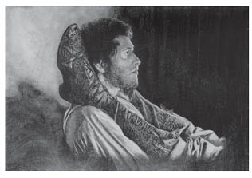

VII
Nasıl olduysa oldu, ama bunun nasıl olduğunu kimse söyleyemez; çünkü her şey adım adım, farkına varılamadan ortaya çıktı. Hastalığın üçüncü ayında İvan İlyiç’in karısı, oğlu, hizmetçiler, uşaklar, ahbapları, doktorlar, en başta da kendisi, onun artık başkalarını yalnız bir bakımdan ilgilendirdiğini anladılar: Şimdi en önemli sorun, onun makamını hemen boşaltıp boşaltmayacağı; çevresindekileri varlığından tedirgin olmaktan, kendisini de çektiği acılardan ne zaman kurtaracağıydı.
Geceleri gittikçe daha az uyuyordu. Önceleri afyon veriyorlardı, daha sonra morfin iğnelerine başladılar. Acıları gene de dinmek bilmiyordu. Yarı uykuluyken duyduğu sıkıntılı bir ağırlık başlangıçta yeni bir durum olarak içini rahatlatmıştı, ama sonraları ağrı kadar, hatta ondan daha çok canını sıkmaya başladı.
Doktorun tavsiyesine uyarak İvan İlyiç’e özel yemekler pişiriyorlardı. Bunlar da gitgide tatsızlaşıyor, günden güne tiksindirici oluyordu.
Tuvalete çıkması için özel düzenekler yapılmıştı. Gene de her seferinde büyük azaplar çekiyordu. Pislikten, utanç verici durumundan, kokudan, bu iş olurken yanında başkasının da bulunmasından dolayı kendi kendini yiyordu.
Neyse ki bu en pis işte talih İvan İlyiç’in yüzüne gülmüştü. Ona mutfak uşağı Gerasim yardım ediyordu.
Gerasim, kent yemekleriyle semirmiş, eli yüzü düzgün, temiz bir köy delikanlısıydı. Aydınlık yüzü her zaman gülümserdi. Tertemiz Rus köylüsü kılığıyla bu pis işi yapması önce İvan İlyiç’in çok tuhafına gitti.
Bir keresinde, oturaktan kalkıp kendinde pantolonunu çekecek güç bulamayınca, oracıkta yumuşak bir koltuğa yığılıverdi. Korku dolu gözlerini, zayıflıktan kadidi çıkmış çıplak kalçalarından ayıramıyor, öylece duruyordu.
O sırada içeriye ağır ama güçlü adımlarla Gerasim girdi. Ayağında kalın çizmeler, üzerinde keten bezinden bir önlük ve tertemiz basma bir mintan vardı. Mintanının yenlerini sıvadığı için genç, sağlam kolları açığa çıkmıştı. İçeri girerken çizmelerinin hoş katran kokusunu ve taze kış havasını da birlikte getirmişti.
Gerasim, İvan İlyiç’e bakmadan, besbelli hastayı incitmemek için yüzündeki yaşama sevincini gizlemeye çalışarak oturağa yaklaştı.
İvan İlyiç zayıf bir sesle ona, “Gerasim,” diye seslendi.
Gerasim bir yanlışlık yapmış olmaktan korkarak birden irkildi. Sakalları yeni yeni çıkan, genç, körpe, güleç, saf yüzünü hızlı bir hareketle hastaya döndürdü.
“Bir şey mi buyurdunuz, efendim?”
“Belki iğreniyorsundur, oğlum... Ne yapayım, kusura bakma...”
Gerasim parlayan gözlerini ona çevirdi, pırıl pırıl beyaz dişlerini göstererek sırıttı.
“Hiç iğrenilir mi? Ne yapalım, hastasınız...”
Böyle diyerek becerikli, güçlü elleriyle alıştığı işi bitirdikten sonra sessiz adımlarla dışarı çıktı. Beş dakika sonra aynı sessiz yürüyüşle geri döndü.
İvan İlyiç hâlâ koltukta oturuyordu. Uşak temizleyip yıkadığı oturağı yerine koyunca İvan İlyiç, “Gerasim,” dedi. “Ne olur, şuraya gel de bana yardım et.”
Gerasim yaklaştı.
“Kaldır beni... Yalnız kalkamıyorum... Uşağım Dmitri’yi dışarı göndermemeliydim...”
Gerasim yanına geldi, tıpkı yürüyüşündeki kendine güvenle onu kucaklayıp becerikli, yumuşak bir hareketle kaldırdı, öylece tuttu. Bir eliyle de pantolonunu yukarı çekip tekrar oturtmak istiyordu. Ama İvan İlyiç ona kendisini divana kadar götürmesini söyledi. Gerasim, sanki kollarında tüy taşıyormuş gibi, onu incitmeden divana götürüp oturttu.
“Sağ ol, oğlum. Çok beceriklisin. Bu işleri ne kadar kolay yapıyorsun!..”
Gerasim yeniden gülümseyerek dışarı çıkmak istedi. İvan İlyiç kendisini bu çocuğun yanında çok rahat hissettiği için onu bir türlü bırakmak istemiyordu.
“Bak oğlum, şu sandalyeyi yanıma çekiver lütfen. Hayır onu değil, ötekini... Şöyle ayaklarımın altına koyuver. Ayaklarım yüksekte olunca rahatlıyorum.”
Gerasim sandalyeyi alarak hiç gürültü çıkarmadan yere bıraktı, hastanın ayaklarını bunun üstüne koydu. İvan İlyiç, Gerasim ayaklarını yükseğe kaldırınca biraz rahatladığını hissetti.
“Hah, bak ne kadar iyi oldu!.. Şu yastığı da ayaklarımın altına koy bari.”
Gerasim bunu da yaptı, ayaklarını bir daha kaldırıp altına yastık koydu. Gerasim ayaklarını kaldırınca İvan İlyiç daha da rahatlamış gibiydi. Gerasim ayaklarını yastığın üzerine bırakınca kötüleştiğini hissetti.
“Gerasim, şu anda işin var mı?”
Kentlerde beyefendilerle nasıl konuşulacağını öğrenen Gerasim, “Hayır, efendim,” dedi.
“Yapılacak başka ne işin kaldı?”
“Daha ne işim kalacak, hepsini yaptım. Yalnız yarına odun kıracağım, o kadar.”
“Öyleyse ayaklarımı biraz yukarıda tut... Olmaz mı?”
“Niçin olmasın? Tutarım.”
Gerasim, hastanın ayaklarını kaldırdı. İvan İlyiç bu durumda ağrılarını hiç duymuyor gibiydi.
“Odun işi ne olacak?”
“Siz hiç merak etmeyin. Onu da yetiştiririz.”
İvan İlyiç, Gerasim’e, sandalyeye oturarak ayaklarını tutmasını söyledi, onunla konuşmaya başladı. İşin tuhafı, Gerasim ayaklarını yukarıda tutarken kendisini çok iyi hissediyordu.
İvan İlyiç o günden sonra Gerasim’i arada bir çağırıp yanında oturtmaya başladı. O sırada onunla konuşmaktan da zevk alıyordu. Gerasim bunu, zorluk çekmeden, istekle, büyük bir içtenlikle yapıyordu. Başkalarının canlılığı, sağlamlığı, dinçliği, gücü İvan İlyiç’i incittiği halde yalnız Gerasim’in kuvveti ve dinçliği zoruna gitmiyor, üstelik onu yatıştırıyordu.
İvan İlyiç’i en çok üzen, herkesin yalan söylemesiydi. Sanki ölmek üzere değilmiş de yalnızca hastaymış; eğer sinirlenmezse ve tedavi görürse her şey düzelecekmiş gibi bir tavır takınıyorlardı. Oysa ne denli uğraşırlarsa uğraşsınlar durumun düzelmeyeceğini, üstelik ağrılarının artıp öleceğini adı gibi biliyordu. İşte herkes gibi onun da bildiği bu gerçeği örtbas ederek gözüne baka baka yalan söylemeleri, ayrıca bu yalana katılması için kendisini de zorlamaları onu kahrediyordu.
Ölmek üzereyken çevresini saran bu yalanlar ne kadar aşağılayıcıydı! Ölüm gibi korkunç, görkemli bir olayı günlük ziyaretler, ev eşyaları, yemek için alınan mersinbalığı türünden olağan şeylere indirgemeleri İvan İlyiç’e büyük bir azap veriyordu. İşin tuhafı, onlar böyle gözüne baka baka yalan söylerken, kim bilir kaç kez, “Bırakın artık şu yalanları! Ölmek üzere olduğumu siz de biliyorsunuz, ben de... Hiç olmazsa yalan söylemeyin!” diye bağıracak olmuş, ama hiçbir zaman kendinde bu gücü bulamamıştı.
Korkunç, feci bir şey olan ölüm gerçeğine çevresindekiler herhangi tatsız bir şey, hatta yakışıksız bir olay gözüyle bakıyorlardı. Kalabalık bir salona girerken pis kokular saçan bir adammış gibi tavır takınıyorlardı ona karşı. Bütün bunları yaptıran da, İvan İlyiç’in hayatı boyunca sıkı sıkıya uyduğu nezaket kurallarıydı. Ona kimse acımıyordu, çünkü durumunu anlamak isteyen tek bir Tanrı’nın kulu yoktu. Yalnızca Gerasim her şeyi anlıyor, ona acıyordu. Bu yüzden İvan İlyiç yalnız Gerasim’le baş başa kaldığı zamanlar kendisini iyi hissediyordu. Gerasim sabahlara kadar uyumadan yanında kalır da bacaklarını tutarsa acıları diner gibi oluyordu.

İvan İlyiç o günden sonra Gerasim’i arada bir çağırıp
yanında oturtmaya başladı. O sırada onunla konuşmaktan
da zevk alıyordu. Gerasim bunu, zorluk
çekmeden, istekle, büyük bir içtenlikle yapıyordu.
“Siz merak etmeyin, beyefendi, ben sonra uyurum,” diyordu saygılı uşak.
Bazen de birdenbire senli benli konuşmaya başlıyordu: “Keşke hiç hasta olmasaydın, ama şimdi sana hizmet etmekten kaçınır mıyım?”
Yalan söylemeyen tek kişi Gerasim’di; işin aslını yalnız onun anladığı, gizlemeye gerek görmeden, eriyip giden efendisine açıkça acıdığı ortadaydı. Hatta bir keresinde, İvan İlyiç onu yatmaya gönderdiği sırada, “Hepimiz ölüp gideceğiz. Ne diye yardım etmekten yüksünelim!” deyivermişti.
Gerasim bu sözlerle, ölmekte olan birine yardımdan kaçınmadığını, bir gün kendisi ölürken de başka birinin ona yardım edeceğini söylemek istiyordu.
Bu yalanlardan başka ya da bu yalanların sonucu olarak İvan İlyiç’i üzen bir şey de kimsenin onun istediği gibi ona acımamasıydı. Çektiği uzun ıstıraplardan sonra öyle anlar oluyordu ki –bunu kendine bile açıklamaktan utanıyordu– biri ona acısın, hem de hasta bir çocuğa acır gibi acısın istiyordu... Çocuklar gibi sevilip avutulmayı, okşanmayı, birilerinin başında oturup onun için ağlamasını istiyordu. Yaşını başını almış, önemli bir yargıca böyle şeylerin yapılamayacağını bile bile istiyordu bunu...
Gerasim’le yakınlığı ona bu acınma isteğini sağladığı için onun yanında avunabiliyordu.
Evet, İvan İlyiç ağlamak, okşanmak ve başında ağlayanları görmek istiyordu. Ama onu yoklamaya gelen arkadaşı, mahkeme üyesi Şabak’a ağlayıp içini dökeceği yerde somurtuyor; sert, haşin bir tavır takınarak, sözü yargıtaya gönderilen bir karara getirip görüşünü şiddetle savunmaya başlıyordu.
İvan İlyiç’in son günlerini en çok içindeki ve çevresindeki bu yalan zehirliyordu.